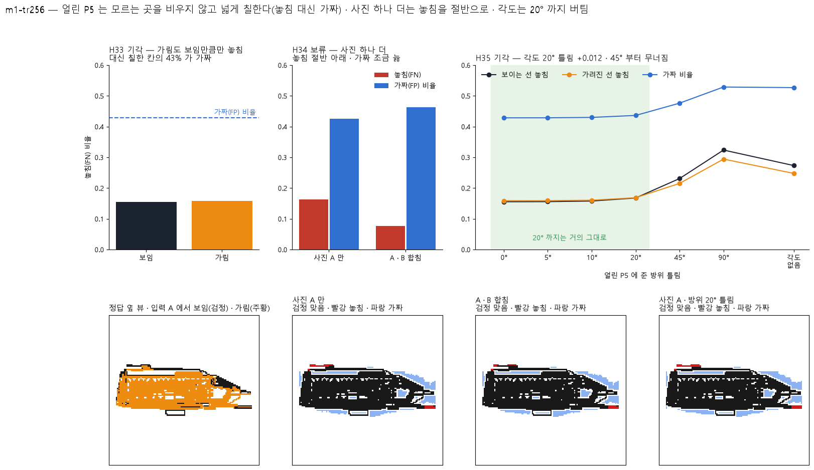

실험 m1_tr0256_h033_정보
목표 G1.1a 한 장 → 3 면도 · G1.1 사진 → 3 면도(중간 표현) · G1 첫 제품 — 피규어 · 메카 사진 여러 장 + 치수 → 숨은선 3 면도 + 파츠별 CAD · G0 임의의 이미지 → CAD 코드 · 빌린 가정 5: 생성기기하 · 흰바탕 · 렌더화풍 · 정사영 · 시점앎 · 갚는 계획: 학습 없음 · P5 얼림 · 판정은 목표 시험지(원화CAD짝 292 렌더) · 시점앎은 이 실험에서 일부러 깨 봄(각도 틀림 · 각도 없음) — 흰바탕 · 렌더화풍은 실물 사진으로 그 뒤 · 정사영은 원근 렌더로 그 뒤 · 목표 시험지 값: 안 잼 (!)
모델을 얼리고 넣는 정보만 바꿀 때, 정보의 양(가려짐 · 사진 둘)과 질(각도 틀림)이 놓침(FN) · 가짜(FP)를 얼마나 바꾸나?
판정 · H33 기각(가려진 선도 보이는 선만큼만 놓침 0.159 대 0.155 · 대신 칠한 칸의 43 % 가 가짜 — 정보가 없으면 FN 이 아니라 FP 로) · H34 보류(사진 하나 더 합치면 놓침 0.163 → 0.076 · 가짜 0.43 → 0.46 · 차 0.096 이 지지선 0.10 에 걸림) · H35 기각(방위 20° 틀림 +0.012 · 45° 부터 무너짐 · 각도 없음 ≈ 90° 틀림) — 다음: 각도 추정 오차가 20 ~ 45° 중 어디인지(m1-tr257 · Orient Anything 영샷) · 시점 선화 M2 는 여러 장을 함께 보게
| 가설 | 주장 | 결과 | 근거 |
|---|---|---|---|
| H33 | 정보의 양 — 입력 사진에서 가려진 선은 정보가 없어 보이는 선보다 훨씬 많이 놓친다(채우는 쪽의 필연 FN) | 기각 | δ 0 · 모델 평균 놓침 보임 0.155 · 가림 0.159 · 가짜 비율 0.426(칠한 칸의 43 % 가 정답 선 1 화소 밖) |
| H34 | 사진을 하나 더 받아 합치면, 첫 사진에선 가려졌지만 둘째 사진에서 보이는 선의 놓침이 준다 | 보류 | 그 화소 놓침 0.169 → 0.073 · 전체 놓침 0.163 → 0.076 · 가짜 비율 0.426 → 0.462 · 292 모델 |
| H35 | 정보의 질 — 각도가 틀리면 보이는 선도 엉뚱한 자리로 가서 놓침이 는다 | 기각 | 보이는 선 놓침(모델 평균) δ 0 0.155 · 20 0.168 · 45 0.230 · 90 0.323 · 각도 없음 0.273 · 가짜 비율 δ 0 0.43 · 20 0.44 · 45 0.48 · 90 0.53 · 각도 없음 0.53 |
분석
한 줄로
물음: 모델을 얼리고 넣는 정보만 바꿀 때, 정보의 양(가려짐 · 사진 둘)과 질(각도 틀림)이 놓침 · 가짜를 얼마나 바꾸나?
답: 얼린 P5 는 모르는 곳을 비우지 않고 넓게 칠한다. 그래서 사진에서 가려진 선도 보이는 선만큼만 놓치고(0.159 대 0.155 · H33 기각), 대신 칠한 칸의 43 % 가 가짜다. 사진을 하나 더 합치면 놓침이 절반 아래로 준다(0.163 → 0.076 · H34 보류). 각도는 20° 틀려도 거의 그대로이고(H35 기각) 45° 부터 무너진다.
왜 이 실험을 했나
m1-tr255 에서 덩어리는 뷰 옮기기의 자리 불확실과 손실의 넓게 칠하기 상에서 온다고 나왔다. 사용자는 「안 보이는 부분은 채울 수밖에 없고 그러면 FN 이 필연 · 줄이려면 정확한 정보를 줘야 한다」 고 보고, 이것도 가설이니 학습 없이 모델을 얼리고 데이터로 확인하자고 했다. 목표는 사진 → 시점 선화 → CAD 다.
바꾼 것
모델은 그대로(P5 얼림)이고 넣는 정보만 바꿨다.
- 양: 정답 선을 입력 사진에서 보임 · 가림으로 나눠 놓침을 셈(m1-tr249 가려짐 표) · 같은 물체의 두 번째 사진 예측을 합침.
- 질: 방위를 ±δ(0 · 5 · 10 · 20 · 45 · 90°) 틀리게 주거나 아예 안 줌.
결과

| 가설 | 결과 | 판정선 | 판정 |
|---|---|---|---|
| H33 놓침 가림 − 보임 | +0.004 [−0.005, 0.012] | +0.10 넘게 | 기각 |
| H34 사진 하나 더(A 가림 · B 보임 선) | 0.169 → 0.073 · 차 0.096 [0.085, 0.108] | +0.10 넘게 | 보류(선에 걸침) |
| H35 보이는 선 놓침 δ 20 − δ 0 | +0.012 [0.009, 0.016] | +0.05 넘게 | 기각 |
놓침 = 정답 선 화소 1 화소 안에 칠한 화소가 없음(문턱 0.4). 가짜 비율 = 칠한 화소 중 정답 선 1 화소 밖인 몫.
왜 이렇게 나왔나
확인한 것
- 가짜 비율이 0.43 이다. 망이 넓게 칠해서 가려진 선까지 덮는다. 정보가 없을 때의 대가가 놓침이 아니라 가짜로 나온다.
- 두 장을 합치면 전체 놓침 0.163 → 0.076, 가짜 0.43 → 0.46 이다.
- 각도 틀림별 보이는 선 놓침은 0° 0.155 · 20° 0.168 · 45° 0.230 · 90° 0.323 · 각도 없음 0.273 이다. 가짜도 같은 모양으로 는다.
짐작 (아직 확인 안 함)
- 「채우면 FN 필연」 은 망이 비워 둘 때의 이야기다. 지금 손실은 비워 두기보다 넓게 칠하기에 상을 주니 FP 로 바뀐다. 벌점으로 넓게 칠하기를 막으면 그때 FN 으로 드러날 것이다.
- 여러 장을 함께 보는 망이면 합칠 때 가짜를 덜 늘릴 수 있다.
한계
- P5 는 한 장 망이고, 합치기는 화소별 최댓값이다.
- 각도 틀림은 방위만 바꿨다. 각도 없음은 학습에 없던 입력이다.
- 렌더 시험지다. 정답 3 면도 기준이라 「시점 선화」 망이 생기면 다시 재야 한다.
배운 것과 다음
지금 망에서 모르는 곳의 대가는 놓침이 아니라 가짜다. 사진 하나 더는 확실히 돕고, 각도는 20° 까지 버틴다.
- m1-tr257 — 그림만 보고 각도를 얼마나 맞히나(Orient Anything 영샷 · 목표 시험지). 20° 안이면 각도 추정으로 충분하고, 45° 넘으면 각도에 덜 기대는 구조가 필요하다.
- 시점 선화 M2 는 여러 장을 함께 보게 짠다(합칠 때 가짜를 덜 늘리게).
- 넓게 칠하기 벌점은 FP 를 FN 으로 바꿀 것이므로, 「추정」 표시와 사진 더 받기 안내를 같이 설계한다.
실험 기록
- 카드 · 정보256.py(흐름 · 예측 · 재기 · 그림) · 잼.json · 흐름.png · 결과.png · 원본 out/설명/캐드부품/모델256(세기.npz · 예측 δ 0 · 20)